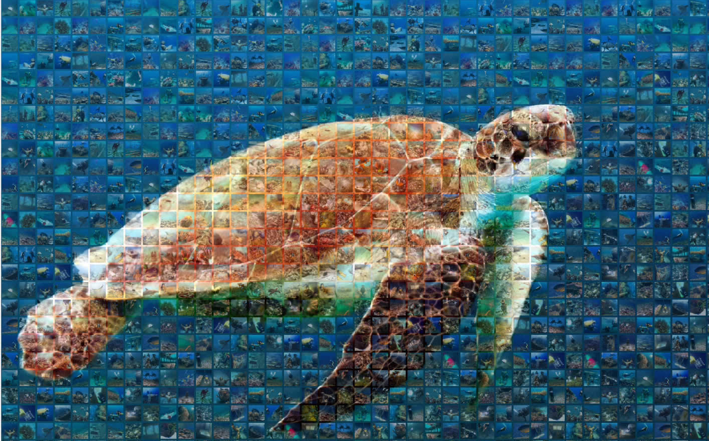
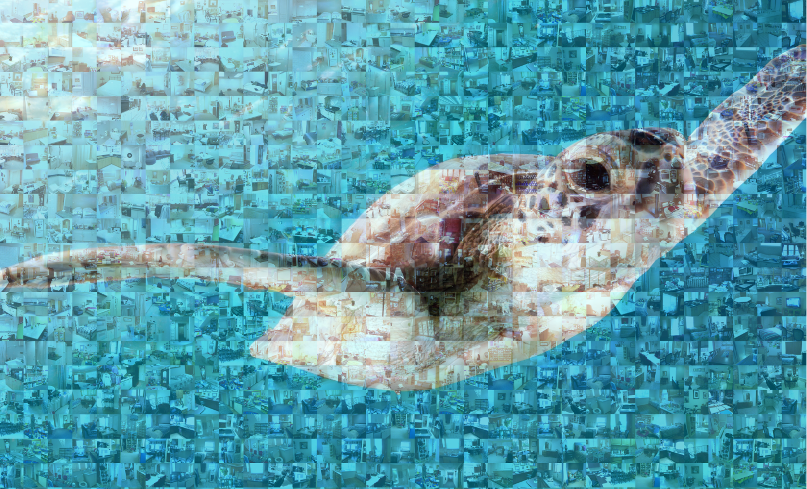
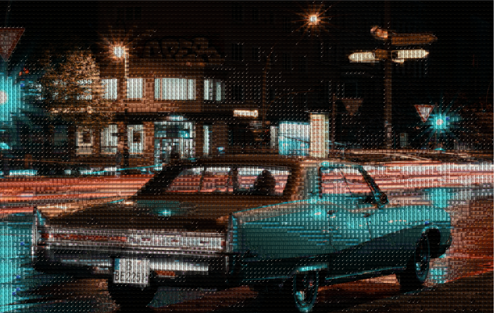
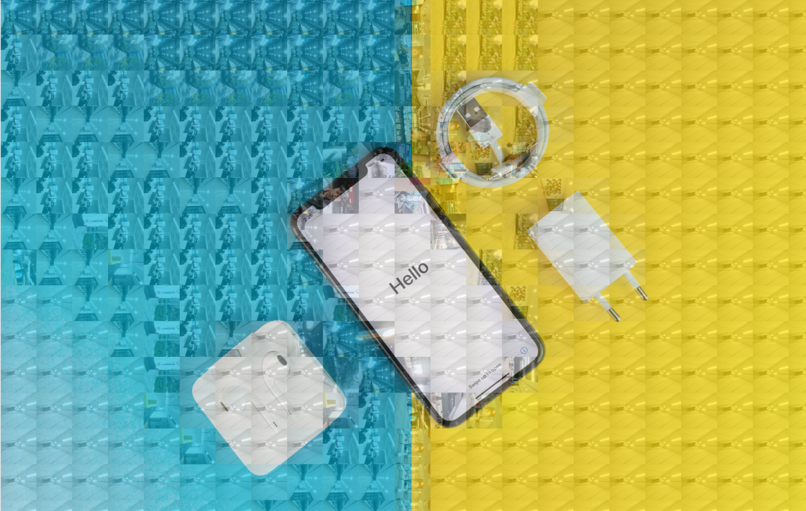
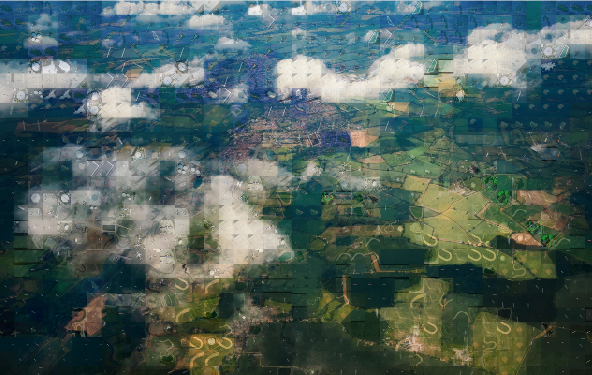
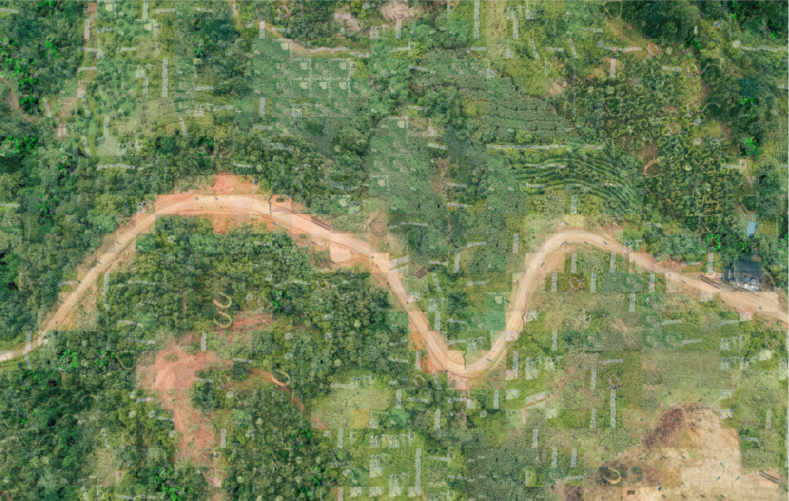
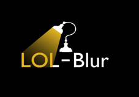

Datasets


UIEB Dataset
S-UIEB Dataset
(real underwater image pairs)
(synthetic underwater image pairs)


LLIV-Phone Dataset
Under-Display Camera Image Dataset
(lowlight images and videos taken by phones)
(real and synthetic UDC images)


ORSSD Dataset
EORSSD Dataset
(SOD in optical remote sensing images)
(Extended ORSSD)

Joint Low-light Enhancement and Deblurring Dataset